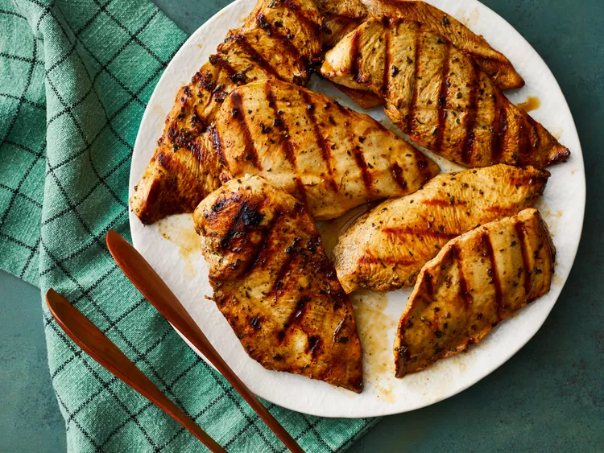

Home
Grilled Chicken

Grilled Chicken
This grilled chicken marinade is the best!
It is so flavorful and so simple to prep with easy pantry ingredients.
Ingredients
- Red wine vinegar
- Oil
- Soy sauce
- Spices and seasonings
Steps
- Gather all ingredients.
-
Whisk vinegar, soy sauce, olive oil, parsley, basil, oregano, garlic
powder, and black pepper together in a bowl.
-
Pour into a resealable plastic bag. Add chicken, coat with the marinade,
squeeze out excess air, and seal the bag. Marinate in the refrigerator,
at least 4 hours.
-
Preheat grill for medium-low heat and lightly oil the grate. Drain and
discard marinade.
-
Grill chicken on the preheated grill until no longer pink in the center,
4 to 5 minutes per side. An instant-read thermometer inserted into the
center should read at least 165 degrees F (74 degrees C).